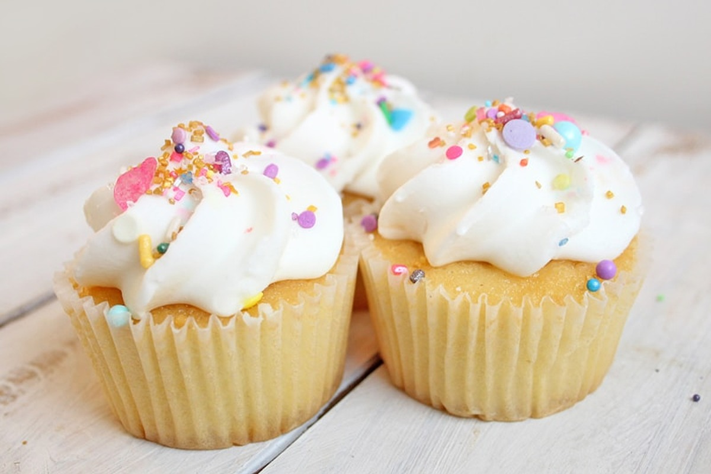
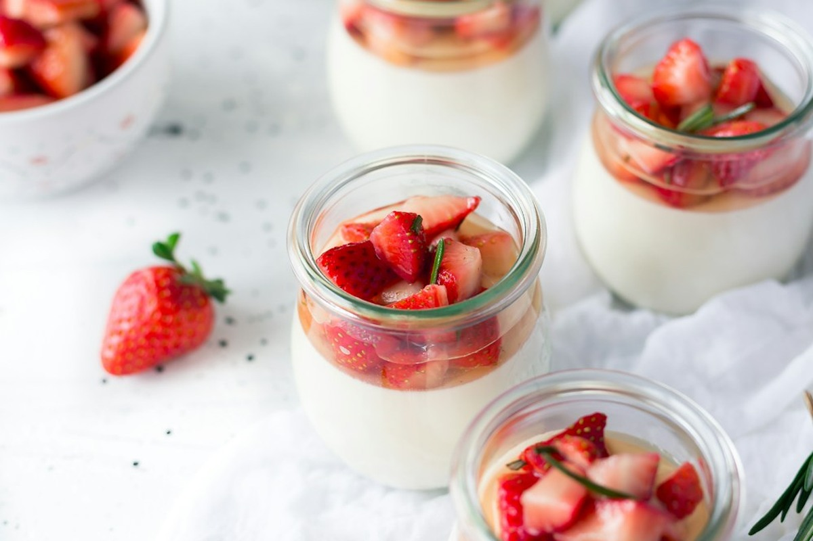
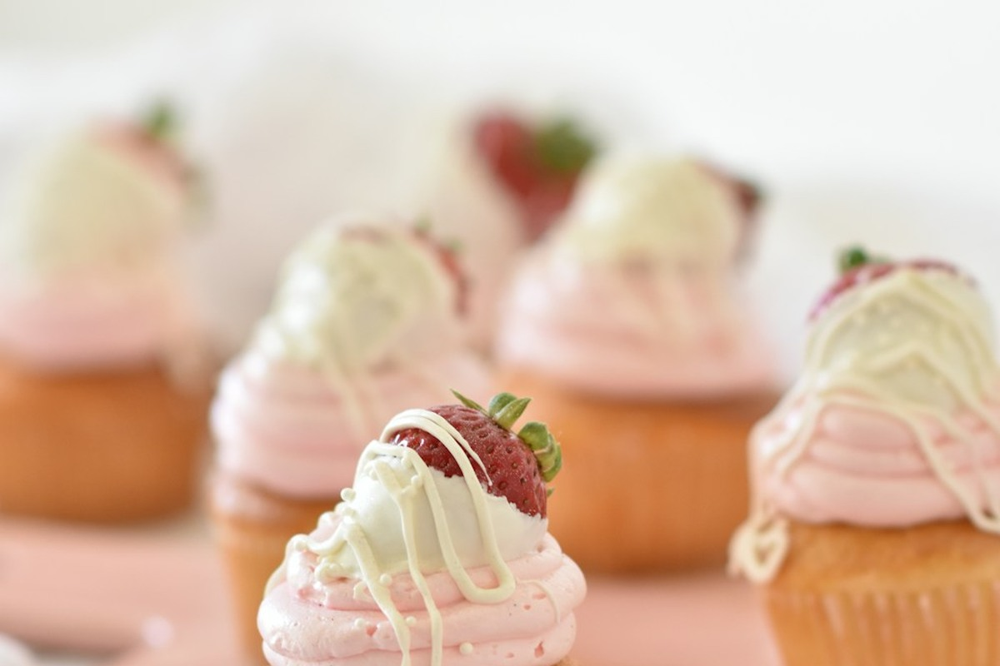
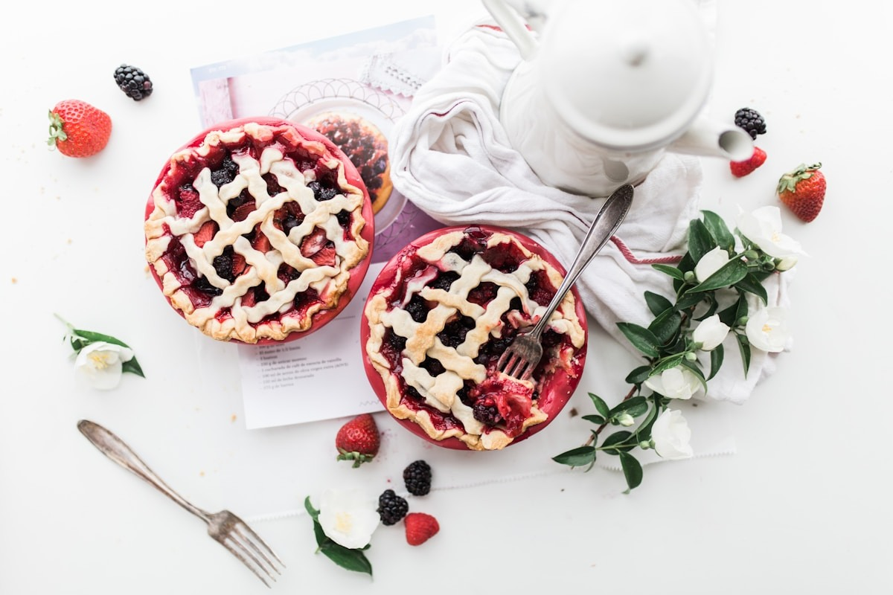
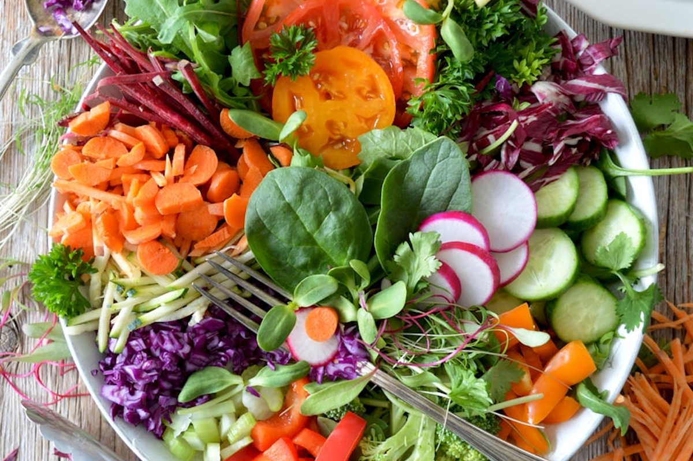

190 S LaSalle Street, Suite 2800, Chicago, IL 60603, United States
+1-877-667-7705
Slow-simmered in hand-hammered French copper cauldrons with pure organic wildflower meadow nectar, capturing the fleeting golden essence of sun-drenched high-altitude apricots.
Harvest Specification
65° Brix Natural Refraction

Unlike modern industrialized preserves boiled rapidly under high pressure, our atelier insists on wide, open-mouthed hammered copper cauldrons. The rapid thermal conductivity of pure copper caramelizes fruit sugars gently without scorching delicate aromatic terpenes.
Every small batch is inspected at five-minute intervals with optical refractometers to ensure an exact 65-Brix fruit-sugar balance, unlocking a velvety texture that glazes patisserie with mirror-like brilliance.
Discover Our HeritageMeticulously bottled in hand-numbered apothecary glass for culinary purists, Michelin-starred patisseries, and private collectors.

Infused with crushed vanilla bean pods and mountain blossoms, designed specifically to glaze delicate buttery croissants and mille-feuille.
Read Tasting Notes →
Our flagship velvet apricot preserve simmered with organic citrus zest and wild clover honey for a deeply complex, jammy mouthfeel.
Read Tasting Notes →Unfiltered stone fruit halves gently suspended in their own fragrant nectar, celebrating the unadorned purity of midsummer harvest.
Read Tasting Notes →Our seasonal harvest follows centuries of biodynamic stone fruit husbandry to protect subtle aromatic volatiles.
Fruit is gathered exclusively between 5:00 AM and 8:30 AM before direct sunlight softens natural pectins.
Every individual fruit lot undergoes optical refractometer grading to guarantee minimum 18-Brix natural sugars.
Simmered in batches of no more than twelve kilograms to maintain uniform heat distribution across the cauldron wall.
Jars rest in dark, temperature-stabilized cellars for thirty days to allow fruit acids and meadow honeys to harmonize.
The rare Royal Blenheim cultivar delivers high natural acidity that balances deep floral sweetness. When blended with sun-dried Malatya varietals, the resulting compote gains unprecedented textural viscosity without gelatin or commercial additives.
Our master confituriers document micro-climatic variances across every vintage, honoring soil drainage, rainfall cycles, and diurnal temperature swings.
Explore Terroir RecordsScientific precision meets culinary poetry across our seasonal vintage productions.

| Vintage Cru | Varietal | Brix Refraction | Ideal Culinary Pairing |
|---|---|---|---|
| Cuvée Dorée | Royal Blenheim | 64.5° Brix | Triple-Crème Brillat-Savarin |
| Velours d'Orchard | Malatya Heirloom | 66.0° Brix | Warm Brioche & Clotted Cream |
| Réserve Miel | Tilton & Wild Flora | 65.2° Brix | Roasted Duck Breast Glaze |
| Atelier Pureté | Early Golden | 63.8° Brix | Tahitian Vanilla Bean Gelato |
Celebrated in fine dining establishments, boutique bakeries, and private salons globally.
"Apricot Velvet produces the purest expression of stone fruit I have encountered in forty years of French pastry craft. The viscosity and aroma are flawless."
Chef Laurent Vaneau
Executive Pâtissier, Salon de Gastronomie
"The perfect balance of tart fruit acidity and delicate clover honey sweetness elevates our artisanal cheese pairings to an unforgettable sensory event."
Élise Moreau
Head Fromager & Gastronomy Curator
"Uncompromising dedication to open copper cauldron caramelization. You can taste the genuine warmth of midsummer sunlight in every single spoonful."
Marcus Sterling
Master of Culinary Confectionery
Guidance regarding preservation, shelf stability, and vintage storage.
We welcome connoisseurs, culinary directors, and private collectors to our tasting salon at 190 S LaSalle Street, Suite 2800, Chicago, IL 60603, United States. Experience vertical vintage comparisons and customized pairing consultations.
